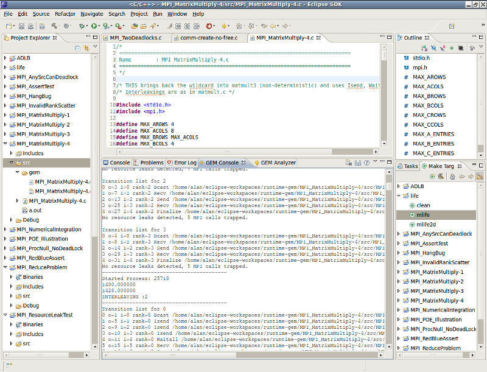

|
Console View
|
Activating the Console View
The Console View is opened automatically when GEM is run. This allows the user to see progress as GEM runs and
also gives the user a chance to cancel long running operations. Once a GEM verification run is complete, the
view with the active focus will visible (see the GEM Preference Page
for details).
Console Overview
The GEM Console view is dedicated console for viewing STDOUT & STDERR from ISP itself. No other terminal data will
be present here. The STDOUT generated in the Console View will be useful to the advanced user, but in general, the
Browser & and Analyzer views exist to graphically examine this output as well as the generated trace file.
STDERR will be printed to the GEM Console in bold red.
Understanding Output
Please reference the Understanding GEM Output help page.
The image below shows what the Console View should look like.

Note: On the GEM Preference Page, you can specify whether you want new output to
replace the older or if it should be appended to the existing terminal output.
GEM Console View Options
This view's toolbar has three buttons:
 Clear Console - Removes all entries from the consoles, leaving it blank.
Clear Console - Removes all entries from the consoles, leaving it blank.
 Save Output to File - Launches a window that lets you save the current contents as a .txt file anywhere you want.
Save Output to File - Launches a window that lets you save the current contents as a .txt file anywhere you want.
 Get GEM Console Help - Opens the Eclipse help topic related to the GEM Console View.
Get GEM Console Help - Opens the Eclipse help topic related to the GEM Console View.
Note: This same functionality can be obtained through the context and pull-down menus for the view.
Back to Top | Back to Table of Contents
School of Computing * 50 S. Central Campus Dr. Rm. 3190 * Salt Lake City, UT
84112 * isp-dev@cs.utah.edu
License